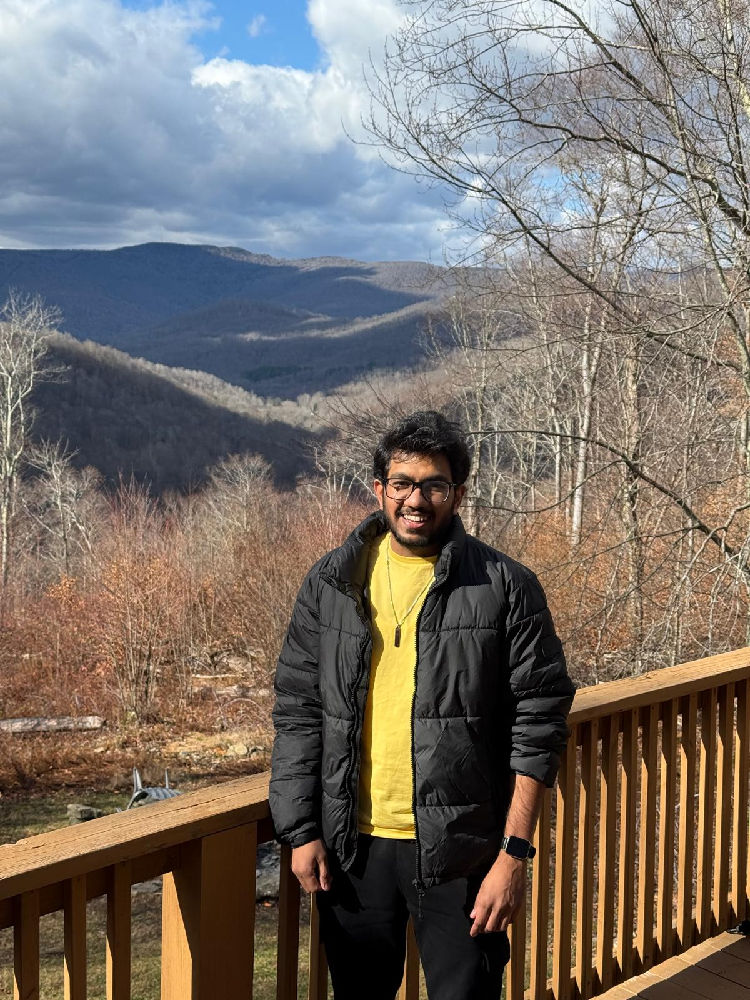

Machine Learning · Deep Learning · Biomedical Imaging
Machine learning for biomedical imaging, with MR Elastography as a primary focus.
I’m a Ph.D. candidate at The Ohio State University building deep learning,
segmentation, diffusion/score-based generative modeling, and optimization pipelines for
imaging inverse problems and clinical decision support. Current work spans MRE reconstruction, automated scar segmentation in Myocardial Delayed Enhancement, and
Diffusion-driven augmentation for limited-data clinical imaging.
• Internship Work: Myocardial scar segmentation using deep learning,
cardiac MRI flow-view classification using self-attention and transfer learning, and
diffusion models for data augmentation in cardiac MRI segmentation.
• PhD Work: Design of deep learning-based inversion methodologies for
MR Elastography by formulating the inverse problem as a data-driven reconstruction
framework.

Hassan Iftikhar
Software Engineer Intern @ Neosoft
Ph.D. Candidate · Biomedical Engineering
The Ohio State University, Columbus
Profile
Research identity: ML/DL methods first, with MR Elastography as a
primary translational application domain.
My work integrates modern ML methods with imaging physics to improve robustness, data-efficiency, and clinical feasibility in biomedical imaging.
I design inversion and reconstruction frameworks such as DIME and 3D-DIME to recover high-quality stiffness maps from noisy and highly aliased wavefields. In parallel, I apply segmentation and diffusion-based data strategies to other clinical imaging tasks, so the methodology remains broadly transferable beyond elastography. I am co-advised by Prof. Rizwan Ahmad and Prof. Arunark Kolipaka.
MRE Inverse Problems
FEM Simulation
Deep Learning Inversion
Score-Based Gaussian Models
Biomedical Image Segmentation
SMS-MRE
Reconstruction
Featured Research Projects

3D-DIME
3D extension of DIME that improves cross-slice anatomical consistency using volumetric FEM phantoms for liver and brain applications.
- Technique demonstrated in ISMRM 2026 abstract
- Breast tumor 3D-MRE application in progress
- Journal manuscript in preparation

SMS-Accelerated MRE Reconstruction
Deep learning reconstruction for SMS-EPI MRE to suppress aliasing and noise while reducing effective scan constraints.
- Liver MRE: shorter effective breath-hold burden
- Ongoing lung MRE work at 0.55T and higher multiband factors
- Submitted to ISMRM 2026
Applied ML Across Biomedical Imaging
Diffusion / Score-Based Gaussian Modeling (Neosoft)
Built score-based diffusion workflows to generate and augment clinically realistic image variations, helping mitigate dataset scarcity and improve model robustness in limited-data medical imaging settings.
Myocardial Scar Segmentation (Neosoft)
Developed automated myocardial scar segmentation on LGE-CMR using hybrid CNN+Transformer models, with diffusion-driven augmentation to address class imbalance and sample scarcity in production-oriented pipelines.
Publications & Talks
Selected Publications
- DIME: Deep Learning Driven Inversion Framework for Shear Modulus Estimation in Magnetic Resonance Elastography (2025), MAGMA.
- DIME ISMRM 2026 abstract (submitted), Cape Town, South Africa.
- 3D-DIME ISMRM 2026 abstract (submitted), Cape Town, South Africa.
- SMS-accelerated MRE reconstruction ISMRM 2026 abstract (submitted).
- AI stiffness estimation dataset curation, ISMRM 2025, Honolulu.
Talks & Presentations
- Hayes Advanced Research Forum, 2026 (Columbus, OH)
- ISMRM 2026: Image Reconstruction and AI Session
- ISMRM 2025: Acquisition and Reconstruction Session
- ISMRM 2024: Image Reconstruction and AI Session
Experience
Software Engineer Intern · Neosoft
Built a hybrid CNN+Transformer pipeline for automated myocardial scar segmentation from LGE-CMR and integrated it toward production in suiteHeart post-processing workflows. Used diffusion/score-based generative augmentation to mitigate data scarcity and improve segmentation robustness.
Graduate Research Associate · OSU Wexner Medical Center
Led AI-based MRE stiffness reconstruction and fast cardiac reconstruction research, including domain adaptation, score-based Gaussian priors, and plug-and-play optimization pipelines.
Machine Learning & Software Development Intern · BLOMSO
Developed end-to-end ML systems for soil nutrient prediction with custom hardware and limited-data model optimization.
Skills
PythonC/C++MATLABPyTorch
TensorFlowCUDASignal Processing
Image ProcessingTransformersU-Net
Diffusion/Score ModelsBiomedical Segmentation
Data AugmentationClinical AI Pipelines
COMSOLEmbedded Systems
Education
Ph.D., Computational Imaging and Machine Learning
The Ohio State University, 2022–2027 · GPA: 3.8/4.0
B.S., Electrical and Computer Engineering
UET Lahore, 2018–2022 · GPA: 3.6/4.0
Leadership & Service
- Peer Mentor, BMEGSA Peer2Peer Program (2023–2024)
- Undergraduate Research Mentor (2022–2024)
- PhD Admissions Guidance Speaker, UET Lahore (2023–2025)
- Volunteer, International Friendship Inc. (2022–2025)
Honors & Awards
- Distinction in Signals Processing, OSU (2022)
- National Talent Scholarship (2018–2022)
Let’s Connect
I’m open to research collaborations in biomedical imaging, MRE, and machine learning for healthcare.